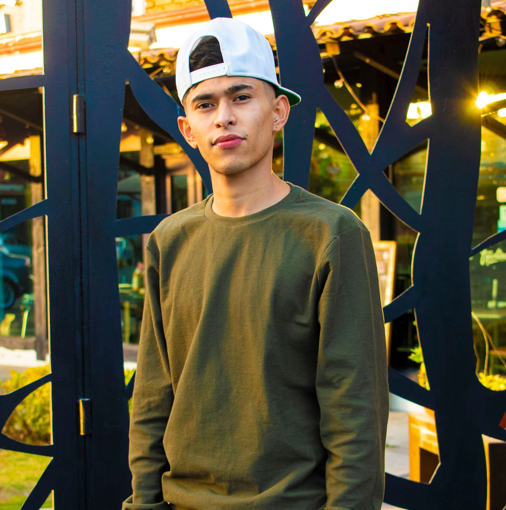

Ricardo Sanchez Valdovino
Hola me llamo Ricardo Sanchez Valdovino, actualmente tengo 25 años y soy estudiante de la licenciatura en Diseño Grafico en la BUAP.
Entre mis pasatiempos favoritos estan el pintar, dibujar y ver series, actualemente estoy incursionando en la escultura y los art-toys. Por otro lado, me gusta jugar futbol y salir a correr. Tambien me gusta bastante la naturaleza y los deportes extremos.
Mis areas fuertes en el diseño son la ilustracion, la fotografia, las infografias, la seleccion tipografica, el desarrollo de identidades graficas y el desarrollo de carteles.
Terminando la carrera me gustaria emprender un estudio de tatuajes e ingresar a una agencia para poder obtener experiencia y asi en un futuro poder abrir mi propia agencia de diseño.